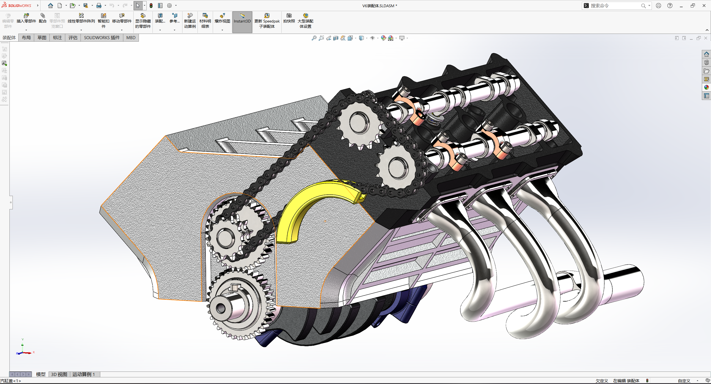

FIG. 01 / SOLIDWORKS MODEL机械装配模型截图
动力结构的
装配关系。
这件 V 型发动机装配模型呈现了气缸布局、顶部凸轮轴、链条与齿轮传动，以及一侧排气歧管之间的空间关系。模型重点展示不同结构在同一装配体中的配合与层次。
建模软件SolidWorks
作品类型装配体建模
展示重点传动结构 / 发动机部件布局

这件 V 型发动机装配模型呈现了气缸布局、顶部凸轮轴、链条与齿轮传动，以及一侧排气歧管之间的空间关系。模型重点展示不同结构在同一装配体中的配合与层次。